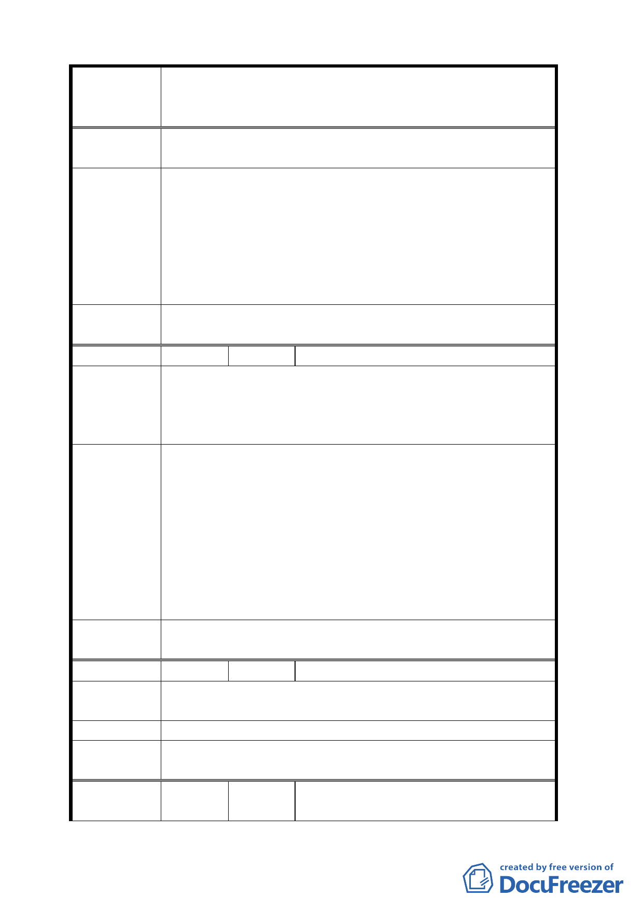

案名
建議辦法
委員會
決議
編號
陳情理由
建議辦法
委員會
決議
編號
陳情理由
建議辦法
委員會
決議
編號
變更臺北市華光社區暨週邊地區住宅區、電信用地、郵
政用地及變電所用地土地為商業區、數位科技專用區及
金融服務專用區主要計畫案
4.若將來市府要標售本地段時，需由原住戶為第一優先
購買者。
1.本地區在 95 年 12 月加速推動都市更新方案圖 7-3-2
短期方案，變更後土地使用計畫圖上的 B 住（特）及
H 住（特）住宅區，在本次公展計畫時變成金融特區，
請保留住宅區作為都市更新原住戶就地安置之用。
2.因住戶地上權為合法持有，請市政府需按市價補償或
在本案興建住宅，原地安置住戶，以屋換屋，或由本
計畫區內住戶購買土地自行興建住宅，照顧市民。
同編號 2 決議。
18 陳情人 呂許瓊緣
1.請市政府先行考量本計畫區內住戶安置問題及補償事
宜後，重新計畫本案。
2.若將來市府要標售本地段時，需由原住戶為第一優先
購買者。
1.本地區在 95 年 12 月加速推動都市更新方案圖 7-3-2
短期方案，變更後土地使用計畫圖上的 B 住（特）及
H 住（特）住宅區，在本次公展計畫時變成金融特區，
請保留住宅區作為都市更新原住戶就地安置之用。若
市府配合行政院取消住宅區變更為金融區，則市府無
異為行政院陳倉暗渡、壓榨殘民。
2.因住戶地上權為合法持有，請市政府需按市價補償或
在本案興建住宅，原地安置住戶，以屋換屋，或由本
計畫區內住戶購買土地自行興建住宅，照顧市民。
同編號 2 決議。
19 陳情人 陳文景
請市政府先行考量本計畫區內住戶安置問題及補
償事宜後，再重新計畫本案。
以屋換屋或由本案內住戶購買土地自行興建住宅區。
同編號 2 決議。
20
陳情人
陳勝錦、劉愛嬌（我已 87 歲，無依
無靠，尚須照顧精神病患兒子）
- 14 -